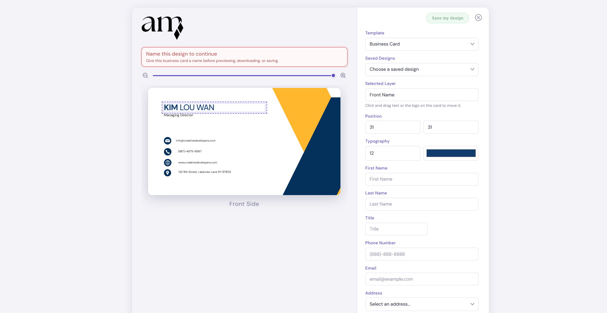
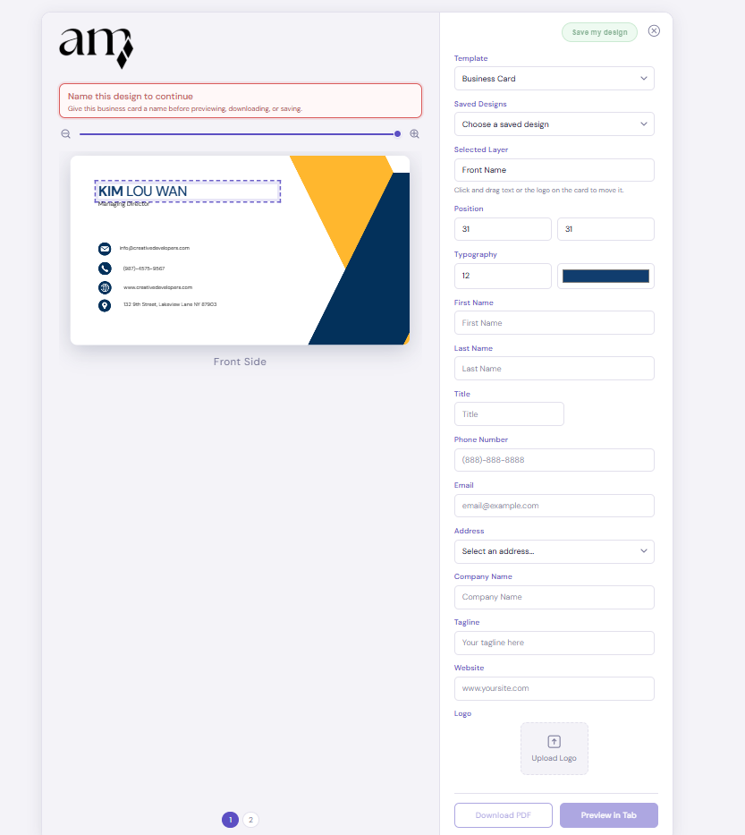

Architect Mini: Web-to-Print Template Builder
Designing a lightweight builder.
Architect Mini is a web-to-print business card builder concept designed to make branded customization feel simple, structured, and production-aware. The project combined product planning, interface design, visual identity work, and an interactive front-end prototype.
My Role
I handled UX and UI design, branding, front-end implementation, and prototype setup for the live demo version of the tool.
The interactive prototype is still evolving, so the embedded preview reflects the latest in-progress state from the live deployment.
Putting the live prototype front and center
The product needed to feel tangible, not just conceptual. Leading with the live prototype helped show the editor, saved-state flow, and sign-in experience in a way static mockups could not fully capture.
This live view keeps the product experience visible immediately and shows how the login and editor flow work together in the current prototype.

The login page introduced a softer, branded entry point so returning users could re-enter the tool without the experience feeling cold or overly technical.
Starting with a friendlier sign-in experience
The entry point set the tone for the rest of the tool. A clearer login layout and softer visual language made the product feel approachable before users ever reached the editing workspace.
Building a clearer editing workflow
The editor was designed as a guided split-screen builder with visible save states, structured naming prompts, and a live preview. That combination helped first-time users understand where they were in the process and what actions mattered next.

Small interaction details like the project-name prompt and save-state placement made the builder feel more understandable and less intimidating for new users.

The field layout supports a detailed card-building flow with editable content, layer controls, uploads, and preview actions tied directly to the live composition area.
Connecting detailed controls back to the preview
The form side of the interface had to stay powerful without becoming visually noisy. Grouping controls clearly and keeping them connected to the live layout helped the tool remain usable as complexity increased.